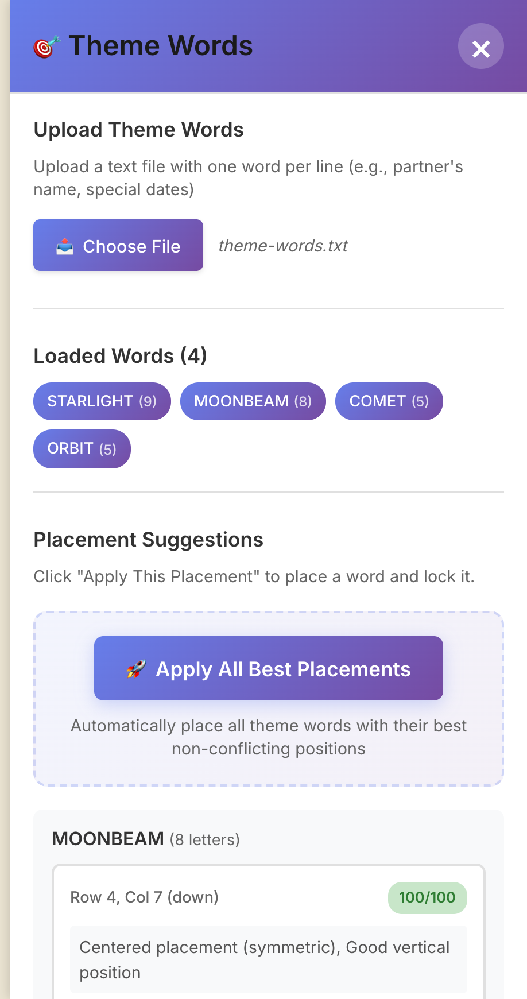
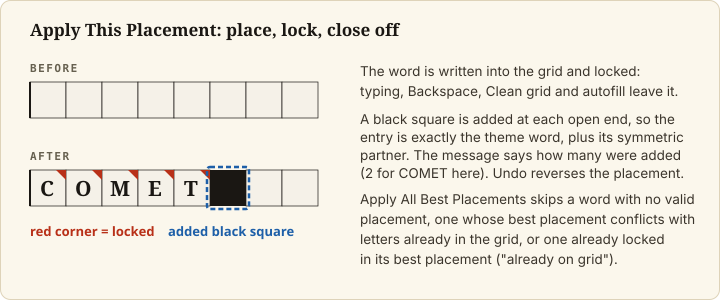
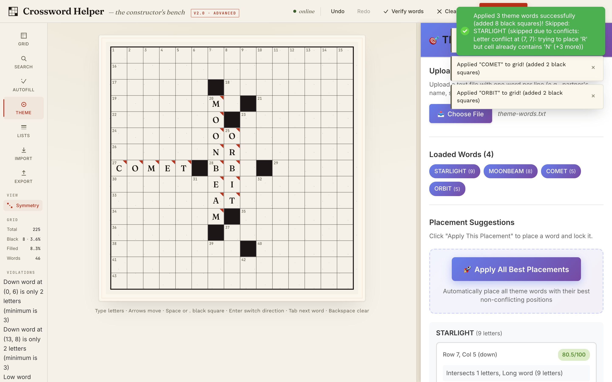

Add theme words
Goal
Load your theme words, place them in the grid, and lock them so autofill keeps them. Use this when your puzzle has set entries (a theme, names, a date) that must survive the fill.
Prerequisites
- The app is running and a grid is open, with the black squares you want (Set up the grid). The panel reads the current grid size, so choose the size first.
- A plain text file with one theme word per line.
Steps
1. Prepare the theme file
One word per line, letters only (the full rules are in File formats).
A line that contains a space, hyphen or digit is dropped without a message, so write ICECREAM, not
ICE CREAM. A list of more than 50 words (the limit MAX_THEME_WORDS in backend/core/theme_placer.py), a
word shorter than 3 letters or a word longer than the grid is wide is an error, and any one error rejects the
whole list: fix the file and load it again.
2. Load the words
Open the Theme tool in the left rail. In Upload Theme Words, click Choose File and pick your file.
The app validates the list. If something is wrong, it shows an error toast starting Invalid theme words: and
lists each problem. If the list is valid, it reports Loaded N theme words and immediately works out where
each word could go. The words appear under Loaded Words.
3. Place the words
The Placement Suggestions section lists each word with its candidate positions. Each suggestion shows
Row r, Col c (direction) (counted from 1, like the labels on the grid), a score out of 100 and a short reason.
Hovering over a suggestion does not change the grid. Click ✓ Apply This Placement to place and lock that word.




To place everything at once, click Apply All Best Placements. It applies each word's best suggestion in
turn and skips a word that has no valid placement, whose best placement conflicts with something already in
the grid, or that is already locked in its best placement (already on grid); the skipped words are listed with
the reason.
Placing a word can add black squares to the grid, so the Black count may rise; the message after a placement
says how many it added. Undo reverses a placement.


4. Know what a lock does
A placed theme word is theme-locked: its squares show a small coloured corner, you cannot overwrite them by
typing or clear them with Backspace, you cannot make one of them black, Clean grid leaves them alone, and
autofill treats them as fixed.
You can also lock a letter you typed yourself: right-click the square, or select it and press Cmd+L (Ctrl+L
on Linux). The same action unlocks it.
If you change the grid so a suggestion no longer fits, the suggestions are refreshed for the changed grid.
Final Result
The theme words are in the grid, marked as locked, and they are still there after an autofill.
Known problems
- A JSON export keeps letters and black squares but not which words are theme-locked, so after importing it the
theme words can be overwritten.
Save gridkeeps the locks.
It is tracked under "Known Limitations" in the README.
Next Steps
- Fill around the theme: Autofill a grid.
- The theme word file: File formats.